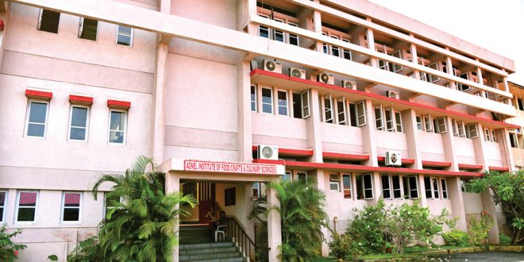
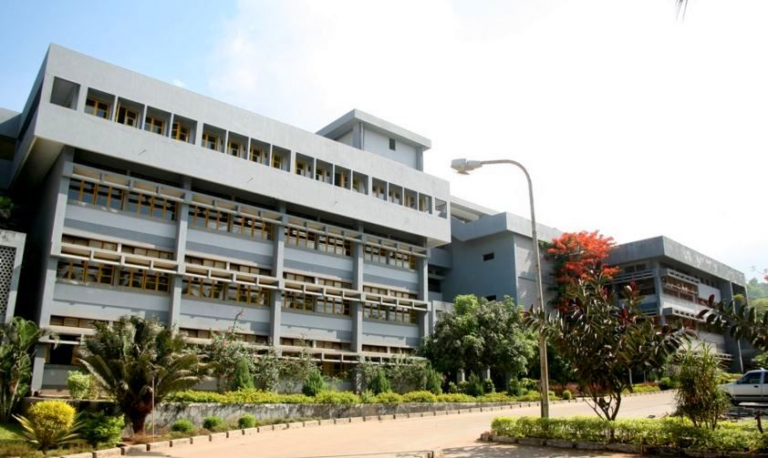
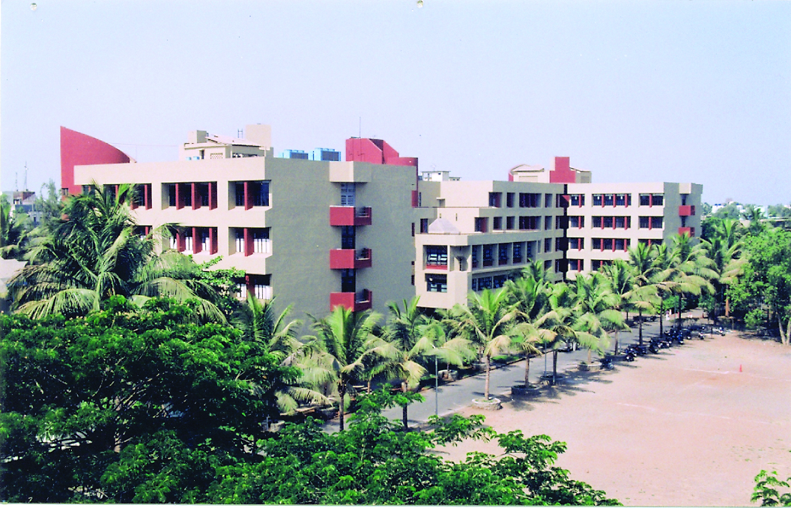
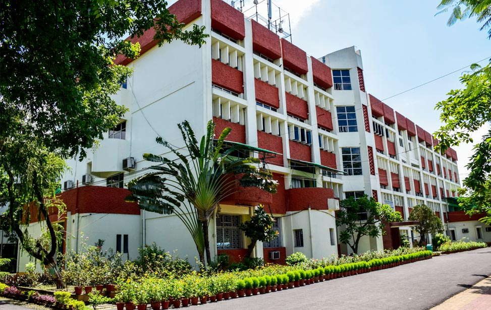
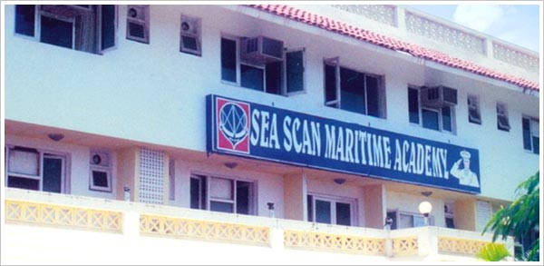
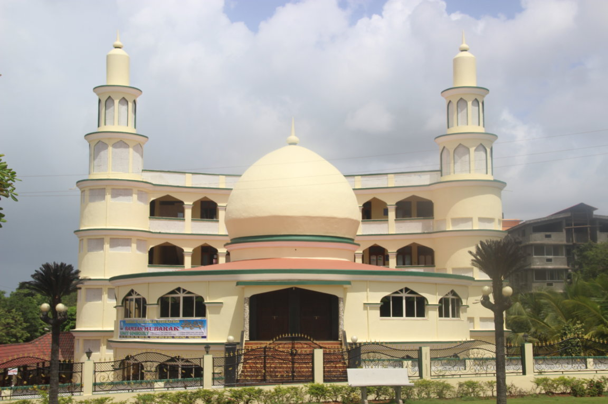

Verna is a village in Salcete, Goa, India, adjacent to the village of Nagoa. It is located approximately 10 km north of the South Goa district headquarters Margão, 18 km south-east of Vasco da Gama and 23 km south-east of the state capital Panjim. Postcode: 403722,Area Code(s):0832
The village is named after the Sanctuary of La Verna in Italy.
1]. Angel Entrepreneurship Development Institute Educational institution in Nuvem, Goa Address: Agnel Technical Education Complex, Agnel Ashram, Verna, Goa 403722 Phone: 0832 279 1420
2]. Agnel Institute of Food Craft and Culinary Sciences College in Nuvem, Goa Address: Agnel Ashram Pedestrian Underpass, Gounlloy, Verna, Goa 403722 Phone: 0832 279 1211
3]. Padre Conceicao College of Engineering College in Verna, Goa Padre Conceição College of Engineering is a private engineering college in Verna, Goa, India, established in 1997. The college is affiliated to Goa University, Taleigao, Goa, and the programmes are approved by All India Council for Technical Education, New Delhi. Address: Opposite Agnel Ashram, Agnelganv, Verna, Goa, 403722 Phone: 0832 279 1266
4]. Fr. Agnel Polytechnic Polytechnic in Nuvem, Goa Address: Agnel Technical Education Complex, Agnelganv Matol, Verna, Goa 403722 Phone: 0832 279 1206
5]. IAM Institute of Hotel Management , Goa Educational institution in Nuvem, Goa Address: Gonvoloy, behind Tata Motors Showroom, Nuvem, Goa 403604 Phone: 097649 03379
6]. Sea Scan Maritime Academy Special education school in Verna, Goa Address: L 47A,B&C, Phase 2E, Verna Industrial Estate, Verna, Goa 403722 Phone: 0832 278 3248
Mahalasa Narayani temple at Verna plateau.

Holy Cross Church is the parish church of Verna
Masjid Mehboob-E-Subhanni
Verna railway station , Cansaulim Rail Way Station are the very nearby railway stations to Verna. How ever Madgaon Rail Way Station is major railway station 11 KM near to Verna
Airports nearest to Verna; sorted by the distance to the airport from the city centre.
1. Boomerang Beach Restaurant and Bar 4th Ward Colva, Colva 403708, India +91 85529 1926
2 .Star Fish Beach Hut Arossim Beach, Cansaulim 403712, India
3.Ignia 12/1, Next to Udear Spring, Verna 403722, India +91 95452 97817
4. Mango Terrace Heritage Village Club, Arossim Beach, Cansaulim, India +91 832 669 4444
5. Soul Souffle Ambulor Village, Verna 403722, India +91 97646 94321
6. Mish Mar Majorda Beach | Majorda Salcete, Majorda 403713, India +91 98221 55154
7. Sam's Goan Beach Shack Majorda Beach, Majorda 403713, India +91 98221 56550
8. Aaron's Beach Shack Arossim Beach, Cansaulim, India +91 89995 95861
9. Pentagon Opposite Majorda Beach Resort | Majorda Salcete, Opposite Majorda Beach Resort, Majorda 403713, India +91 832 288 1402
10. Antique Mardol Verna Electronic City | Near IBPC Petrol Pump, Verna 403722, India +91 832 288 7090
11. Mum's Recipe | Verna Industrial Estate, Gidc Adm Building, Verna 403722, India (0832) 6483099
1]. Chikitisa Hospital Hospital in Quelossim, Goa Address: First Gate, Verna Industrial Estate, Verna, Goa 403722
2]. Verna Hospital Hospital in Verna, Goa Address: Verna, Goa 403722
3]. Dr Dhaimodker's Occupational Health And Research Centre Hospital in Verna, Goa Address: Verna Industrial Estate, Verna, Goa 403722
4]. Coral Clinic Syatems Hospital in Verna, Goa Address: Verna Industrial Estate, Kesarvale, Goa 403710 Phone: 0832 288 7026
5]. Dr. Roque Ferreira's Memorial Hospital Hospital in Verna, Goa Address: Verna, Goa 403722
6]. Primary Health Centre, Cortalim Hospital in Quelossim, Goa Address: Cortalim – Racaim – Loutulim – Borim, Zamboll, Quelossim, Goa 403710
7]. Primary Health Centre, Cansaulim Hospital in Cansaulim, Goa Address: Inn, Cansaulim, Goa 403712